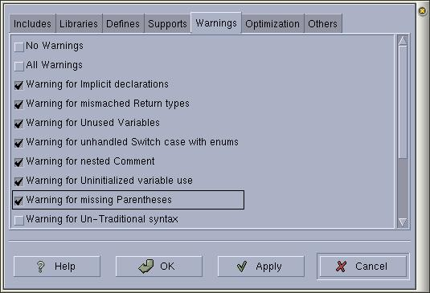

|
|
Anjuta Manual version 0.1Copyright (c) Kh. Naba Kumar Singh |
| Contents | Index | Shortcuts |
| PREV: Specifying supports for your program | UP: Setting Compiler Options | NEXT: Code Optimizations |
Check the warnings you want to output in the message box when you compile or build your file or project.
Checking 'No warnings' will disable all warnings.
Similarly, checking All warnings will enable all warnings.
